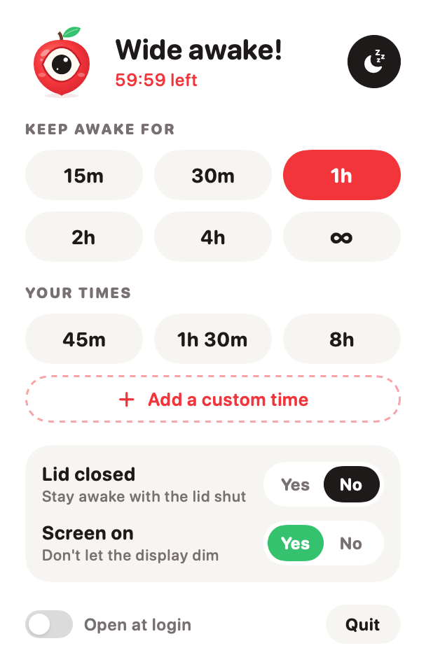
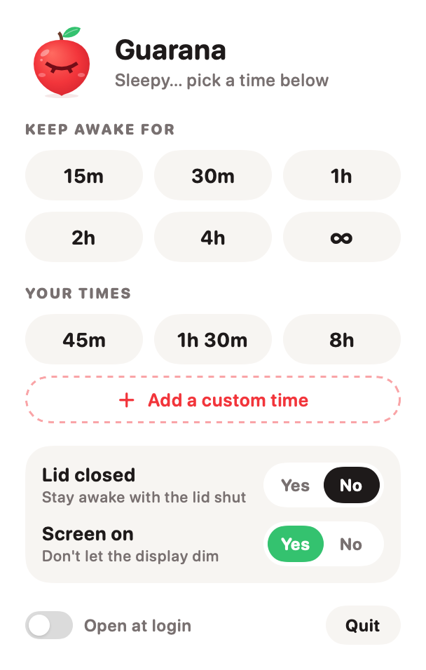
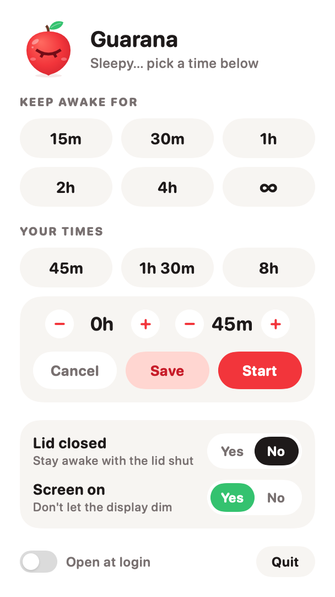
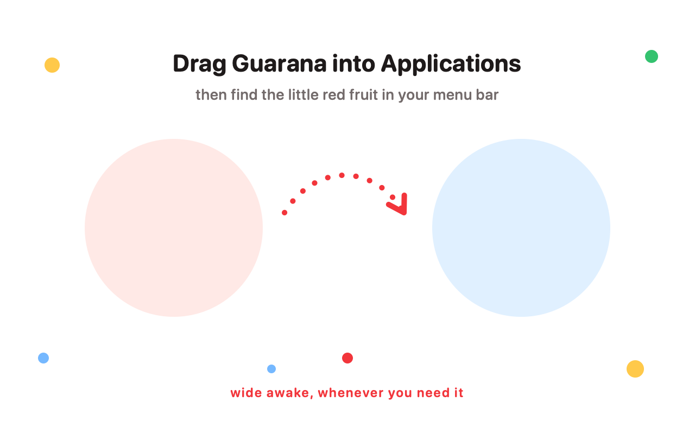
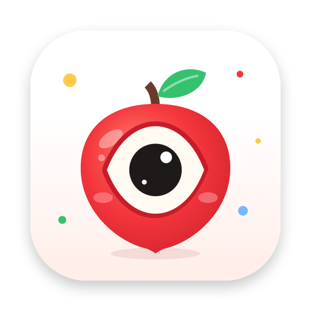

Guarana is a little red fruit in your menu bar. Tap it, pick a time, and your Mac stays awake. No dimming, no sleeping, even with the lid closed.
When Guarana is on, its eye pops open in your menu bar. When it's off, it takes a little nap.

Everything you need to stop your Mac from dozing off, and nothing else.
15 minutes, an hour, four, or forever. Pick a time and Guarana counts it down, then lets your Mac rest.
Always need 45 minutes for that render, or 8 hours for a download? Save it once and it's always one tap away.
Close your MacBook and keep it running: downloads, servers, music to a speaker. Choose Yes or No, and change it whenever you like.
Everything lives in one small popover. Click the fruit and you're there.


No setup wizard and nothing to configure. Open the disk image and drag the fruit across.


It uses the same built-in macOS power assertions as Apple's caffeinate tool. When your time runs out, or you tap the moon, it lets go and your Mac goes back to its normal sleep settings.
macOS only lets an administrator stop a MacBook from sleeping when the lid shuts. The first time you choose Yes, Guarana asks once and adds a tiny rule that allows exactly one thing: turning lid sleep on and off (pmset disablesleep). Nothing else. To remove it, run sudo rm /etc/sudoers.d/guarana.
Yes, but give your Mac some air. Don't zip it into a bag while it's awake. Guarana always turns normal lid sleep back on when your time ends or you quit.
Yes. Set "Screen on" to No, and the display can dim and sleep while everything else keeps running.